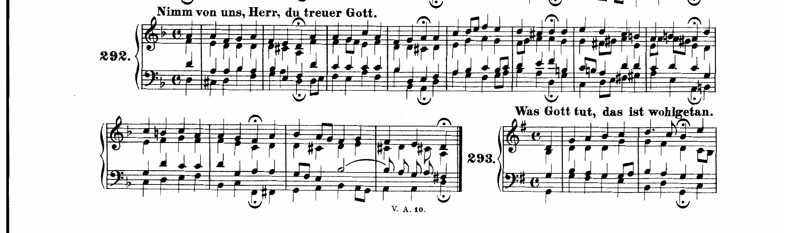
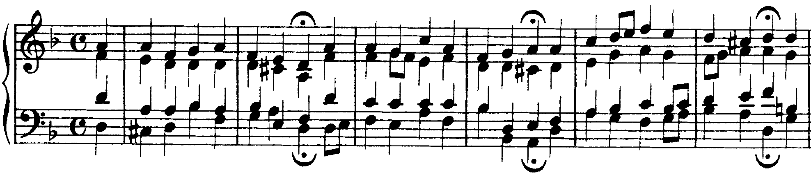
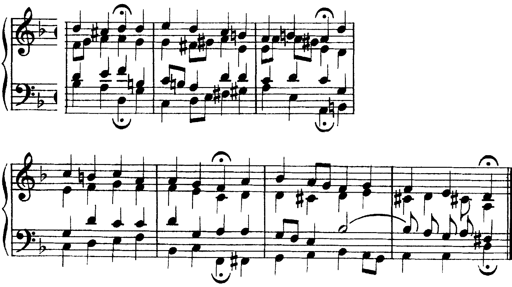

Sei versi in re minore: due volte la relativa promessa e non raggiunta, poi la dominante minore con i suoi due suoni nuovi, fa maggiore per la strada di do, e il ritorno con la terza piccarda.
Il Corale, che si basa su melodie di grande semplicità, trova fra le proprie righe le proposizioni di possibili variazioni di tono che danno colore e vita alla composizione.
R. Dionisi, M. Toffoletti, G. L. Dardo, Studi sul Corale, p. 50
A11Lezione 48 «La dominante del minore» e lezione 49 «La mediante del minore», pp. 126–129: le due mete di questo corale, la minore e fa maggiore.
Per Dionisi le modulazioni del corale «sia transitorie che stabili, si riferiscono soprattutto ai cinque toni “vicini”»; si entra nel tono nuovo «per mezzo di accordi comuni», «per mezzo di suoni caratteristici differenziali» o con il cromatismo, e nella modulazione stabile si conferma «il tono raggiunto per mezzo di una cadenza»; dopo la corona è possibile anche «l’attacco diretto» della tonica nuova (Studi sul Corale, p. 56).

La partitura: n. 292 dell’edizione Breitkopf & Härtel dei 371 corali, «Nimm von uns, Herr, du treuer Gott»; in basso a destra l’inizio del n. 293.
| Verso | Battute | Chiusa | Tono |
|---|---|---|---|
| 1 | levare–2 | cadenza perfetta | re minore |
| 2 | 2–4 | semicadenza | verso fa, poi re minore |
| 3 | 4–6 | cadenza perfetta | verso fa, poi re minore |
| 4 | 6–8 | cadenza perfetta | la minore (v) |
| 5 | 8–10 | cadenza perfetta | do, poi fa maggiore (III) |
| 6 | 10–12 | cadenza perfetta, terza piccarda | re |
Sei versi di due battute, ciascuno chiuso da una corona sul terzo movimento; il quarto movimento è il levare del verso seguente. La melodia, al soprano, si muove fra il re4 e il fa5 e finisce sul re. Il piano tonale ha due metà: nei versi 1–3 tutte le corone sono in re, e per due volte la musica si avvicina a fa maggiore senza arrivarci; nei versi 4–5 le corone cadono su la minore e su fa maggiore, i due toni vicini del minore che il libro tratta per primi. Il sesto verso torna a re.

Il primo verso afferma re minore: V6 con il do♯ al basso, i, iv6, i6, e alla b. 2 iv7, V e i, una cadenza perfetta. Sulla dominante il tenore scende sotto il basso, mi3 sotto la3: un incrocio frequente nei corali, che lascia al basso la linea sol–la–re della cadenza.
Il secondo verso si sposta verso fa maggiore senza alterazioni: III, VII6 (do–mi–sol con il mi al basso, V6 di fa), v (la minore, la dominante senza sensibile), di nuovo III. Fa non viene confermato: la b. 4 porta VI e iv6, e la corona cade sul la maggiore con il do♯, una semicadenza in re. Il terzo verso riparte dalla dominante minore e torna verso fa (iv, III, poi mi–sol–si♭, il vii°6 di fa); l’accordo che dovrebbe essere la tonica di fa è invece si♭ maggiore, il VI di re, che con V e i chiude in re (b. 6). La relativa è stata preparata due volte e lasciata due volte: è la modulazione «transitoria» di Dionisi, che sposta l’interesse verso un tono vicino senza stabilirlo (p. 50).
Contare come modulazione ogni zona di fa maggiore. Nelle bb. 3–6 non c’è nessuna cadenza in fa: le corone sono in re. Si scrive «verso fa», non «in fa».

Il quarto verso modula a la minore con i due suoni caratteristici della dominante minore (D’Urso, Bertolini, p. 126). Il si♮ arriva subito, sul levare, nel sol–si–re del tenore: è il 6+ di re. Quell’accordo è il perno, IV di re con la sesta della scala melodica e VII di la; il do maggiore della b. 7 (VII di re, III di la) appartiene ancora a tutti e due i toni. Seguono re–fa♯–la, il IV di la con il fa♯ della scala melodica, e il sol♯, il 4+ di re: prima di passaggio nel contralto, poi al basso del V65 di la. La b. 8 chiude con un 4–3 al contralto (la–sol♯) sulla dominante e la cadenza perfetta in la minore.
Il quinto verso va a fa maggiore passando per do. Il si♮ resta: sul levare sol–si–re con il si al basso, VII6 di la e V6 di do; la b. 9 è in do (I, vii°6, I6), e il suo ultimo accordo, fa maggiore, è il perno: IV di do, I di fa. Il si♭ del basso alla b. 10 (si♭–re–fa–la, IV7 di fa) è la controsensibile nuova, e la cadenza perfetta conferma fa, il III di re. Il do maggiore della b. 9 è quello che Dionisi chiama un «falso scopo»: una modulazione transitoria verso un tono che serve a raggiungerne un altro, «uno scopo reale» (p. 51).
L’ultimo verso torna in re. Il fa♯ del basso sul levare (re–fa♯–la, V6 del iv) porta al sol minore della b. 11; poi V7, VI e ii°6 con il sol al basso. Il si♭ del tenore, legato dal VI, diventa alla b. 12 un ritardo 9–8 sulla dominante; segue la quarta e sesta, il 4–3 del contralto (re–do♯) e la corona su re maggiore: la terza piccarda chiude in maggiore un corale in minore.
Cercare il sol♯ e non vedere il si♮: alla dominante minore i suoni nuovi sono due, e il primo arriva un movimento prima del verso. Chiamare do il tono del quinto verso: la corona è su fa, dopo il si♭.
Re, re, re, la minore, fa maggiore, re: le corone dicono il tono di ogni verso. Fa maggiore è toccato due volte prima di essere raggiunto.
Si♮ e sol♯ per la minore; il si♭ che torna per fa; il fa♯ per il sol minore dell’ultimo verso.
Sol maggiore (IV=VII) e do maggiore (VII=III) verso la minore; fa maggiore (IV=I) verso fa: accordi che appartengono a tutti e due i toni.
C1Lezione 1 «Modulazione alla tonalità relativa», p. 228: i profili melodici modulanti, i suoni caratteristici e le clausole; lezioni 2–4, pp. 232–243: melodie da analizzare.
«Il procedimento modulativo, nel Corale, si rivela attraverso l’analisi della melodia»; gli «indici di rotta» sono le «tirature» (tetracordi e pentacordi di una scala), i suoni su cui la melodia insiste, che hanno «quasi sempre il carattere di Dominante», e i suoni caratteristici; «le singole frasi del Corale hanno, solitamente, un unico ambito tonale» (Dionisi, pp. 51–53). La nuova tonalità è «solitamente confermata da una cadenza, e rafforzata» dalle clausole melodiche, fra cui la clausola di soprano 7–1 (D’Urso, Bertolini, p. 228).
| Passo | Che cosa si fa |
|---|---|
| 1 | Il piano: per ogni corona la nota, la clausola, gli eventuali suoni caratteristici del verso; il tono di ogni verso. |
| 2 | «I bassi (e relativi numeri) che determinano i punti finali delle cadenze», poi «l’intero gruppo cadenzale di ogni frase» (Dionisi, p. 40). |
| 3 | «L’intera linea del basso»; il perno di ogni modulazione prima del suono nuovo; nelle ripetizioni della melodia «bassi differenti» (p. 40). |
| 4 | «Infine si realizzeranno gli accordi, cercando di condurre cantabilmente le linee delle singole voci» (p. 40). |
Cominciare dal primo accordo e scoprire il tono di un verso solo alla corona. Modulare a metà verso senza una cadenza che confermi. Ripetere il basso quando la melodia si ripete: Dionisi chiede bassi differenti (p. 40).
Passo 1. Il primo verso si ferma sul la (b. 2): sopra il re del basso è la dominante di sol, una semicadenza. Il secondo verso ha il do♯ e la clausola do♯–re: re maggiore. Il terzo ha il re♯ e si ferma sul si: dominante di mi minore. Il quarto chiude con la–sol: sol maggiore. Passo 2. I bassi delle corone: re, re, si, sol; prima delle due cadenze perfette il salto la–re e re–sol. Passo 3. I perni: la tonica di sol all’inizio del secondo verso (I di sol, IV di re), il sol maggiore sul levare del terzo (IV di re, III di mi), il mi minore sul levare del quarto (i di mi, vi di sol).
Passo 4. Le voci si scrivono per ultime, una frase per volta: il do♯ e il re♯ sono nel soprano, e la sensibile non si raddoppia; alla b. 6 il re♯ del contralto sale al mi.
Dalla melodia: corone, clausole, suoni caratteristici. Un tono per verso; la cadenza lo conferma.
Prima i bassi delle corone, poi i gruppi cadenzali, poi il resto; il perno prima del suono nuovo; bassi diversi per le melodie che tornano.
Per ultime, una frase per volta, con i controlli di sempre: quinte e ottave, sensibile, settima.
La lezione si chiude con il solfeggio (parlato, cantato, ritmico) e con la melodia in re minore da armonizzare per intero a casa. L’ora 42 è un’ora di interrogazioni; il corale che modula.
Compiti per la prossima volta
Armonizza a quattro parti, su due righi, la melodia di otto battute del secondo esercizio in classe. Cifra sotto il basso e segna i due perni con la doppia sigla.
Parti dal basso scritto in classe e correggilo se serve. La prima frase chiude in fa maggiore, la seconda in la minore: nella seconda il si♮ è nella melodia, il sol♯ va scritto in una voce interna o al basso.
Sul quaderno, a matita. La foto del lavoro finito va su Classroom. Nel Workbook: apri l’esercizio C4-U6-L5-01 ↗
Compiti per la prossima volta
n. 354 e n. 355 parlato · n. 356 e n. 357 cantato · n. 358 e n. 359 ritmico
Ogni pezzo a tempo, senza fermarti: il parlato a nomi, il cantato prendendo il primo suono dalla tastiera, il ritmico battendo la pulsazione.
Scrivi la melodia sul quaderno, in chiave di violino: otto battute in 6/8, fa maggiore. Il primo suono è do. Prima il riferimento, poi tutto due volte, ogni coppia di battute due volte, il collegamento 1–4, 3–6 e 5–8, e tutto per controllare.
Il riferimento: accordo di tonica e primo suono
Il dettato · otto battute
Le sezioni (riferimento, tutto, le coppie, il collegamento) si ascoltano una per una e si ripetono quanto serve; le fasi fanno la procedura della classe, con gli annunci e le pause, da qualunque punto.
Sul quaderno scrivi in testa la sigla C4-D-U06-L5. Si corregge all’inizio della prossima lezione.
Compiti per la prossima volta
Scrivi un contrappunto di terza specie (quattro note contro una) sopra il canto fermo, in modo misolidio (finale sol): nove battute. Comincia su una consonanza perfetta, alla cadenza la sensibile sale alla finale, niente quinte e ottave consecutive.
Sul quaderno, con la sigla C4-CP-U06-L5 in testa; la foto va su Classroom.
Realizza a quattro parti il basso senza numeri: dieci battute in 4/4, mi♭ maggiore. Trova tu l’accordo di ogni nota (la regola dell’ottava è il punto di partenza) e scrivilo sotto; poi il soprano, poi le voci interne. Accordi che puoi usare: anche le settime secondarie (ii7) e la V7 della dominante.
Sul quaderno, con la sigla C4-BD-U06-L5 in testa; la foto va su Classroom.
Armonizza a quattro parti il canto dato: dieci battute in 4/4, do minore. Prima le cadenze, poi il basso per intero, e solo alla fine contralto e tenore. Accordi che puoi usare: anche le settime secondarie (ii7) e la V7 della dominante.
Sul quaderno, con la sigla C4-CD-U06-L5 in testa; la foto va su Classroom.
Scritto: La melodia in re minore, armonizzata a quattro parti (Workbook, esercizio C4-U6-L5-01), sul quaderno; la foto va su Classroom. Solfeggio dal quaderno di lettura: parlato n. 354, 355; cantato n. 356, 357; ritmico n. 358, 359 (a tempo, senza fermarsi). Dettato C4-D-U06-L5 dalla pagina della lezione (sezioni da ascoltare, o le fasi della procedura guidata), sul quaderno con la sigla. Contrappunto di terza specie sul canto fermo (C4-CP-U06-L5). Basso senza numeri da realizzare a quattro parti (C4-BD-U06-L5). Canto dato da armonizzare a quattro parti (C4-CD-U06-L5).
In classe
A nomi, a tempo, con la mano che batte. Chi si ferma riparte dalla battuta dopo.
Apri il n. 350 nel quaderno di lettura ↗ chiave di contralto · 12/8
In classe
Si prende il tono dalla tastiera, si canta insieme; poi a gruppi.
Apri il n. 351 nel quaderno di lettura ↗ chiave di violino · 3/4 · si♭ maggiore
Apri il n. 352 nel quaderno di lettura ↗ chiave di violino · 2/4 · re minore
In classe
Tutti insieme, battendo la pulsazione. Poi a file, due battute a testa.
In classe
Armonizza a quattro parti, su due righi, la melodia di otto battute del secondo esercizio in classe. Cifra sotto il basso e segna i due perni con la doppia sigla.
Dieci minuti insieme sul quaderno, alla lavagna il primo punto; il resto è il compito per casa.